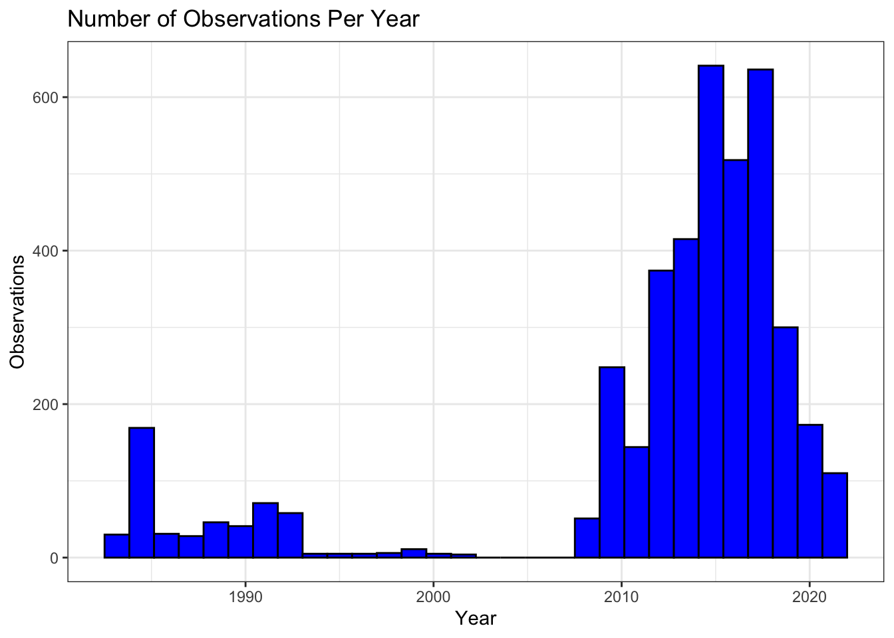
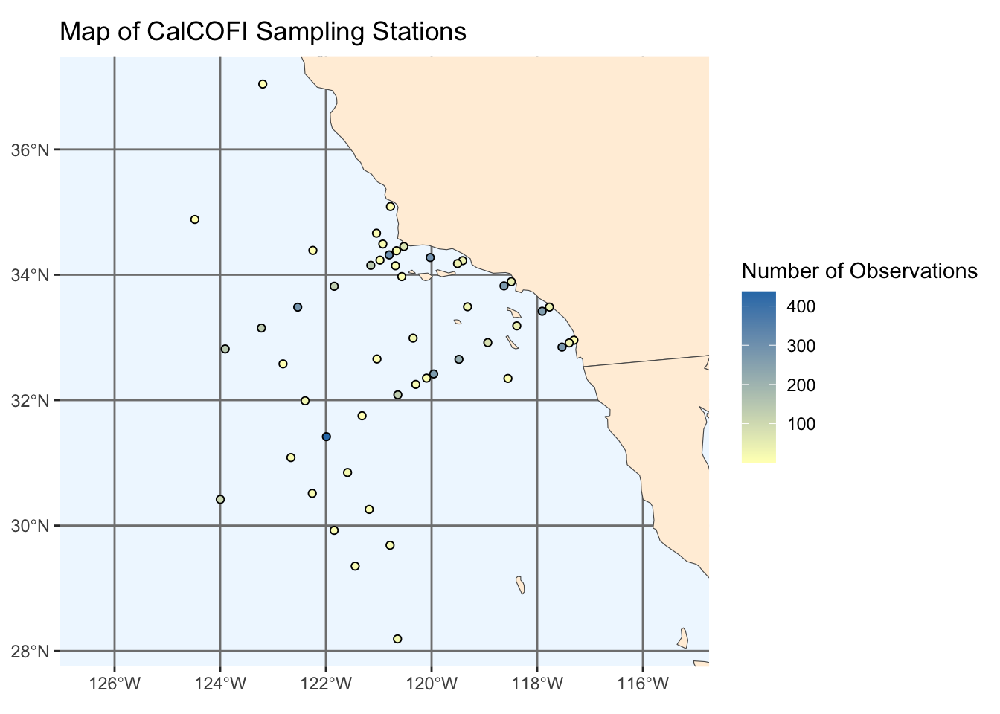
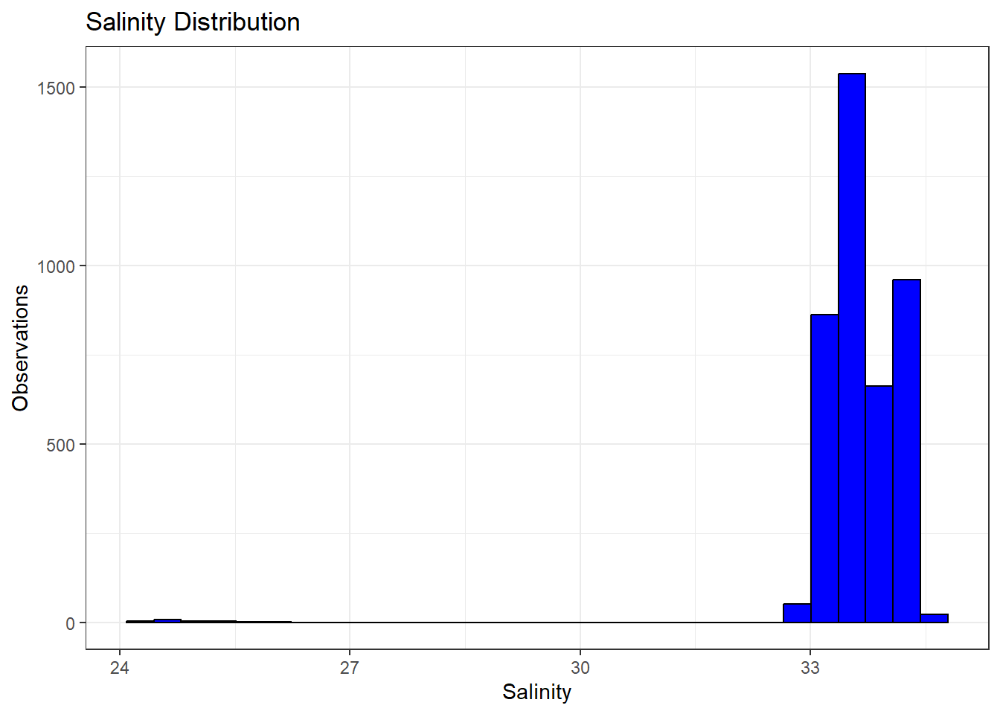
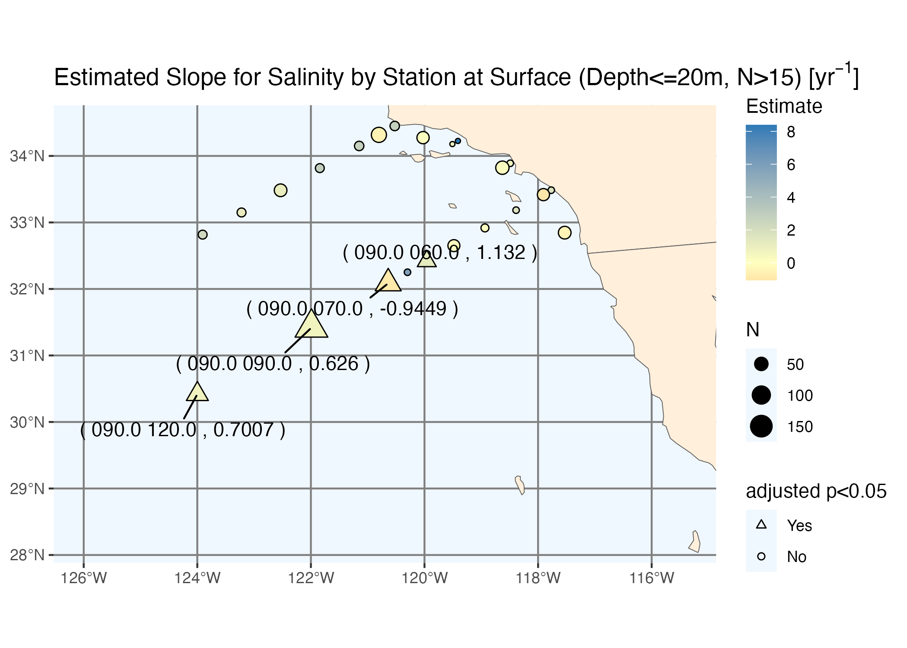
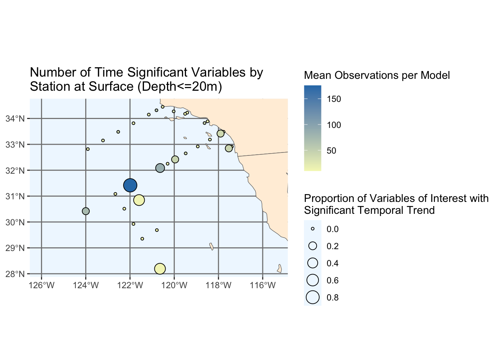

This project is sponsored by California Cooperative Oceanic Fisheries Investigations (CalCOFI), an organization founded in 1949 to study the ecological aspects of the Pacific sardine collapse off of the coast of California. CalCOFI is committed to studying California’s coastal marine environment and collecting relevant oceanographic data in order to provide insight on important climate change related topics such as renewable energy, integrated ocean management, and marine spatial planning.
In particular, it is of interest to examine how the measurements of important ocean carbon chemistry and oceanographic variables have changed over time, namely total alkalinity (TA), total dissolved inorganic carbon (DIC), pH, pCO2, Omega aragonite (\(\Omega_\mathrm{aragonite}\)), Omega calcite (\(\Omega_\mathrm{calcite}\)), and CO2-. Additionally, we aim to examine whether there is a difference in carbon uptake between coastal and non coastal stations due to coastal upwelling. Finally, we wish to assess the performance of Empirical Seawater Property Estimation Routines (ESPER) in predicting carbonate chemistry variables across different depths with easy to collect oceanographic variables such as temperature and salinity as inputs.
Data
CalCOFI samples from a predetermined sampling grid off the coast of California on a quarterly basis. Typical stations are set 40 nautical miles apart. At each sampling point, identified by a station and line number, CalCOFI lowers a carousel of 24 bottles into the water, which collect seawater samples from around 20 different depths (typically ranging from 20 to 515 meters). Researchers on the ship then measure oceanographic values such as the temperature, salinity, macronutrient concentration and other properties of these samples. This results in the oceanographic dataset used in this study.
While oceanographic data is measured on every CalCOFI cruise, carbonate chemistry values such as TA and DIC are only occasionally measured from the collected water samples and are stored in their own dataset.
The oceanographic dataset can be found here , while the carbonate chemistry dataset can be found here.
The above datasets must be downloaded manually and put in the data folder in order for this document to run. They are unfortunately too large to upload to Github.
In order to proceed, we need to merge these two datasets into one, the process of which is shown below.
Code
library(tidyverse)# Read in oceanographic bottle datahydro_bottle <-read_csv("part-1/data/194903-202105_Bottle.csv",# change encodinglocale=locale(encoding="latin1"),# increase guess_max to correctly guess column typesguess_max =Inf)# Read in cast datacast_bottle <-read_csv("part-1/data/194903-202105_Cast.csv")# Read in carbonate chemistry bottle datacc_bottle <-read_csv("part-1/data/carbonate_chem_bottle.csv")# Drop first row (containing units) of carbonate chemistry bottle datacc_bottle <- cc_bottle[2:nrow(cc_bottle),]# Merge oceanographic and cast data based on Cst_Cnt (Cast Count) and Sta_ID (Station ID)hydro_bottle <- hydro_bottle %>%left_join( cast_bottle,by =join_by(Cst_Cnt, Sta_ID) )# Prepare hydro bottle data for mergingdepth_tol <-0.9hydro_bottle <- hydro_bottle %>%mutate(Date =as.Date(Date, format =c("%m/%d/%Y")) ) %>%mutate(Year =year(Date),Month =month(Date) ) %>%mutate(Depthm_Upper = Depthm + depth_tol,Depthm_Lower = Depthm - depth_tol )# Prepare carbonate chemistry data for mergingcc_bottle <- cc_bottle %>%# Create new date column for mergingmutate(Date =as.Date(paste(Month_UTC, Day_UTC, Year_UTC, sep ="/"),tryFormats =c("%m/%d/%Y") ),.before = Year_UTC ) %>%# Change column types for mergingmutate(Depth =as.double(Depth),Latitude =as.double(Latitude),Longitude =as.double(Longitude) )# Merge carbonate chemistry and oceanographic bottle data based on date, location, and depthmerged_bottle_data <-inner_join( cc_bottle, hydro_bottle,by =join_by(Month_UTC == Month, Year_UTC == Year, Station_ID == Sta_ID,between(Depth, Depthm_Lower, Depthm_Upper)),suffix =c(".cc", ".hydro"))# Save merged datawrite_csv(merged_bottle_data, "part-1/data/merged_bottle_data.csv")
EDA
Sampling Over Time
The below histogram shows the number of observations recorded each year. Note that there is a gap from 2002 to 2007.
Code
merged_bottle_data |>ggplot() +geom_histogram(aes(x = Date.cc), fill ='blue', color ="black") +theme_bw() +xlab("Year") +ylab("Observations") +labs(title ="Number of Observations Per Year")

Map of Sampling Stations
Next we’ll take a closer look at what our data looks like by creating a map of the sampling stations. The station with the largest number of observations is station 90.90.
Code
library(gt)library(sf)library(rnaturalearth)library(scales)world <-ne_countries(scale ="medium", returnclass ="sf")stations <- merged_bottle_data %>%group_by( Station_ID ) %>%summarize(lat =mean(Latitude),lon =mean(Longitude),observations =n() )ggplot(data = world) +geom_sf(fill ="antiquewhite1") +geom_point(data = stations,aes(x = lon,y = lat,fill = observations, ),color ="black",pch =21,show.legend=TRUE# force shape to always show in legend ) +coord_sf(xlim =c(stations$lon %>%min() -2, stations$lon %>%max() +2),ylim =c(stations$lat %>%min(), stations$lat %>%max()) ) +# create color scale for slope estimatesscale_fill_gradient2(low ="#d7191c",high ="#2c7bb6",mid ="#ffffbf" ) +# create custom shape scalescale_shape_manual(values =c("Yes"=24, "No"=21),drop =FALSE# force both shapes to always show in legend ) +theme(panel.grid.major =element_line(color =gray(0.5), linetype ="solid", linewidth =0.5 ), panel.background =element_rect(fill ="aliceblue") ) +# fix the order of the legendsguides(fill =guide_colorbar(order =1),size =guide_legend(order =50),shape =guide_legend(order =98) ) +labs(x =NULL,y =NULL,title ="Map of CalCOFI Sampling Stations",fill =str_wrap("Number of Observations", 40) )

Outliers
The below histogram shows the distribution of salinity in the dataset. Note that there is a small group of observations with salinity values in the 20’s. These are unreasonable values that are likely a result of a data entry error, so we will be mindful to remove these observations from future analysis.
Code
merged_bottle_data |>ggplot() +geom_histogram(aes(x = Salnty), fill ='blue', color ="black") +theme_bw() +xlab("Salinity") +ylab("Observations") +labs(title ="Salinity Distribution")

CO2SYS
In the merged dataset above, the only carbonate chemistry variables that have been recorded are TA and DIC. To remedy this, we can use CO2SYS, a program that uses a mechanistic model to calculate all other carbonate chemistry variables given at least two carbonate chemistry variables as well as environmental variables such as temperature and salinity. The CO2SYS routines are written and contained in MATLAB files, so we unfortunately cannot run them in this document. However, the folder titled CO2SYS contains both the CO2SYS routines as well as a script called CO2SYS_calc.m where we apply CO2SYS to our data in order to get the other carbonate variables of interest.
The resulting dataset of CO2SYS calculated variables is named CO2SYS_out.csv in the data folder.
ESPER Model Validation
The Empirical Seawater Property Estimation Routines (ESPER) are used to predict total alkalinity and total dissolved inorganic carbon among other seawater properties using a combination of the following predictors: temperature, salinity, phosphate, nitrate, silicate, and oxygen concentration. There are three implementations of these routines. The first is based on locally interpolated regression models (ESPER LIR). The second is built on neural networks (ESPER NN), and the third averages between these two routines (ESPER Mixed). These routines are implemented in MATLAB, the code for which is included in the ESPER folder.
Using the CalCOFI bottle data, we wish to determine the models’ performance in predicting the observed TA and DIC values with just temperature and salinity and with all available predictors. The first step is to input the CalCOFI data into the ESPER models. This is done in the MATLAB scripts ESPER_calc_lim.m and ESPER_calc_all.m. The models return both estimates and uncertainties in these estimates: these outputs are saved in the data folder. The next step is to combine these measurements into a single dataframe with our merged bottle data so that we may begin exploring the models’ performance.
Code
### Function to average ESPER output weighted by uncertaintiesesper_out_avg <-function(est_df, unc_df, suffix =NA) {# pivot dataframes to long format est_df <- est_df %>%# add row id column before pivotingmutate(id =row_number() ) %>%pivot_longer(-id,names_to ="qty_eqn",values_to ="est" ) %>%# create quantity and equation columnsmutate(qty =sub("([a-zA-Z]+)_[0-9]+", "\\1", qty_eqn),eqn =sub("[a-zA-Z]+_([0-9]+)", "\\1", qty_eqn),.keep ="unused",.before ="est" ) unc_df <- unc_df %>%# add row id column before pivotingmutate(id =row_number() ) %>%pivot_longer(-id,names_to ="qty_eqn",values_to ="unc" ) %>%# create quantity and equation columnsmutate(qty =sub("([a-zA-Z]+)_[0-9]+", "\\1", qty_eqn),eqn =sub("[a-zA-Z]+_([0-9]+)", "\\1", qty_eqn),.keep ="unused",.before ="unc" )# combine estimate and uncertainty dataframes df <-inner_join( est_df, unc_df,by =join_by(id, qty, eqn) )# compute weighted average of estimates df <- df %>%group_by( id, qty ) %>%summarize(est =weighted.mean(est, unc^2, na.rm =TRUE),unc =1/sqrt(sum(1/unc^2, na.rm =TRUE)),.groups ="drop" )# pivot to wide format df <- df %>%pivot_wider(id_cols = id,names_from = qty,values_from =c(est, unc),names_glue =paste0("{qty}_{.value}",if(is.na(suffix)) NULLelsepaste0("_",suffix)) )# drop id column df <- df %>%select(-id )# return dataframe of averaged estimates and uncertaintiesreturn(df)}esper_out_proc <-function(models =c("Mixed","LIR","NN"), in_vars =c("lim","all"), res_vars =c("TA","DIC"),rel_vars =c("TA","DIC")) {# Read in ESPER output files and process using esper_out_avg esper_out_dfs <-lapply(1:(length(models)*length(in_vars)),function(x) { a <-length(models) b <-length(in_vars) est_path <-paste0(paste("part-1/data/ESPER",models[x%%a+1],"est",in_vars[x%%b+1],sep="_"),".csv") unc_path <-paste0(paste("part-1/data/ESPER",models[x%%a+1],"unc",in_vars[x%%b+1],sep="_"),".csv") est_df <-read_csv(est_path, show_col_types =FALSE) unc_df <-read_csv(unc_path, show_col_types =FALSE)esper_out_avg(est_df, unc_df, suffix =paste(models[x%%a+1],in_vars[x%%b+1],sep="_")) } )# Read in combined bottle dataset merged_bottle_data <-read_csv("part-1/data/merged_bottle_data.csv",show_col_types=FALSE)# Combine processed ESPER output with merged bottle data esper_bottle_combined <-bind_cols(merged_bottle_data, esper_out_dfs)# Reformate combined dataframe esper_bottle_combined <- esper_bottle_combined %>%pivot_longer(cols =ends_with(c("_lim","_all")),names_to =c("qty", "out_type", "ESPER_model", "ESPER_input"),values_to ="value",names_pattern ="(.+)_(.+)_(.+)_(.+)" ) %>%pivot_wider(names_from =c("qty","out_type"),values_from ="value",names_sep ="_",values_fn = list ) %>%unnest(cols =c(DIC_est, TA_est, nitrate_est, oxygen_est, pH_est, phosphate_est, silicate_est, DIC_unc, TA_unc, nitrate_unc, oxygen_unc, pH_unc, phosphate_unc, silicate_unc) )# Calculate residuals for desired variablesfor (i in res_vars) { esper_bottle_combined <- esper_bottle_combined %>%mutate(across(starts_with(paste0(i,"_est")), ~get(i) - .x, .names =paste0(i,"_res")) ) }# Calculate relative residuals for desired variablesfor (i in rel_vars) { esper_bottle_combined <- esper_bottle_combined %>%mutate(across(starts_with(paste0(i,"_res")), ~ .x/get(i), .names =paste0(i,"_rel")) ) }# Return dataframereturn(esper_bottle_combined)}esper_bottle_combined <-esper_out_proc(in_vars=c("all")) %>%mutate(ESPER_input =factor(ESPER_input, levels =c("lim", "all"), ordered =TRUE) ) %>%filter( Salnty >30 )
Now that we have our data and ESPER predictions in a single data frame, we can begin to look at model metrics and compare the performance of the three ESPER models. Let’s generate a table of the RMSE, median, and mean percent error for each of the three models.
There are two things we can conclude here. The ESPER Mixed model is the best performing of the three, and all three models do better at predicting TA than DIC. Next, we might be interested in testing whether the mean percent error, or bias, is significant for any of these models. We can do so using a two-tailed \(t\)-test with the following hypotheses \[
H_0:\mu_\epsilon=0\quad\text{and}\quad H_a:\mu_\epsilon\neq0
\]
where \(\mu_\epsilon\) is the observed bias in each model. The \(p\)-values of these tests are shown in the following table, after adjusting for multiple testing using the Benjamini-Hochberg correction.
Based on these results, we can conclude that the biases for both TA and DIC predictions are statistically significant in all three ESPER models. Now, we want to take a look at when the ESPER models do better at making predictions and when their accuracy decreases. First, we will take a look at the ESPER Mixed predictions against the observed values of TA and DIC.
From this plot, we can conclude that ESPER Mixed’s accuracy decreases at extreme values of both TA and DIC, as well as at shallower and deeper depths. Next, we will plot the ESPER residuals against the six ESPER input variables to see if there are similar trends.
Inded, we find that ESPER does worse when there phosphate, silicate, and to a lesser extent, oxygen concentration take on extreme values.
Carbon Trend Analysis
As mentioned prior, we are interested in examining how carbonate chemistry variables have been changing over time, and whether this temporal trend differs among coastal versus non coastal stations. In particular, we are interested in the following variables:
sea_dtd_data <-function(qty, df, date_col) {# Seasonally detrend in a dataframe based on Sutton, A. J. et al. (2022)# qty: vector of column names of variables to be detrended# df: dataframe with observations to be detrended# date_col: date column to be used for fitting# Outputs original dataframe with appended columns of detrended data with name format qty_dtd# Check if date_col is in decimal format and convert if notif (!is.double(date_col)) { df <- df %>%mutate(Date_Dec =decimal_date(get(date_col)) ) }# Detrend data for each desired quantityfor (i in qty) {# Extract overall linear trend lin_trend <-lm(get(i) ~ Date_Dec, data = df, na.action = na.exclude)# Remove overall linear trend df <- df %>%mutate(lin_dtd_obs =as.vector(residuals(lin_trend)) )# Bin observations into a three month sliding scale df_minus <- df %>%mutate(bin_month =ifelse((Month_UTC -1) ==0, 12, Month_UTC -1) ) df_0 <- df %>%mutate(bin_month = Month_UTC ) df_plus <- df %>%mutate(bin_month =ifelse((Month_UTC +1) ==13, 1, Month_UTC +1) ) df_binned <-bind_rows(df_minus, df_0, df_plus)# Compute monthly means of each 3-month bin monthly_means_df <- df_binned %>%group_by( bin_month ) %>%summarize(monthly_mean =mean(lin_dtd_obs, na.rm =TRUE),.groups ="drop" )# Compute anomaly for each bin monthly_means_df <- monthly_means_df %>%mutate(anomaly = monthly_mean -mean(monthly_mean, na.rm =TRUE) )# Subtract anomalies from observations df <- df %>%left_join( monthly_means_df,by =join_by(Month_UTC == bin_month) ) %>%mutate(i_dtd =get(i) - anomaly ) %>%rename_with(.cols = i_dtd,~paste0(i, "_dtd") )# Remove extra columns that are no longer needed df <- df %>%select(-c(lin_dtd_obs,monthly_mean,anomaly) ) }# Return dataframe as outputreturn(df)}
We take two approaches in achieving this, namely modeling each of the variables of interest at each station individually, and creating a hierarchical model that looks at all of the data at once.
Since the relationship between depth and different carbonate chemistry variables is hard to model, especially since each variable has a different relationship with depth, we have decided to limit our study to only observations with depths of less than 20 m.
Station by Station Models
Our first approach involves fitting linear regression models for each station and carbonate chemistry variable regressed against time. The code for which can be seen below.
Code
library(gt)library(sf)library(rnaturalearth)library(scales)library(latex2exp)library(FDRestimation)library(stringr)library(ggrepel)# READ AND PROCESS DATA ---------------------------------------------------# Load merged bottle data and CO2SYS outputmerged_bottle_data <-read_csv("part-1/data/merged_bottle_data.csv")co2sys_out <-read_csv("part-1/data/CO2SYS_out.csv")# Combine merged bottle data and CO2SYS output and filter out anomaliesbottle_co2sys <-bind_cols(merged_bottle_data, co2sys_out) %>%filter( Salnty >30, Depth <1000 )# Create vector of variables to be detrendedqty <-c("TA","DIC","pCO2in","pHin","CO3in","OmegaCAin","OmegaARin")# Detrend variables of interestbottle_co2sys <-sea_dtd_data(qty, bottle_co2sys, "Date.cc")# Get the names of all CalCOFI stations in the data and their locationsstations <- bottle_co2sys %>%group_by( Station_ID ) %>%summarize(lat =mean(Latitude),lon =mean(Longitude),observations =n() )# FIT LINEAR MODELS -------------------------------------------------------# create fits and results objects for surface (<20m)surf_fits <-NULLsurf_results <-NULL# iterate through stations and fit linear models for each quantityfor (i in1:nrow(stations)) {# extract data for station i data <- bottle_co2sys %>%filter((Station_ID == stations$Station_ID[i]) & (Depth <=20))for (j in1:length(qty)) {# check if all values are NAif (data %>%select(paste0(qty[j],"_dtd")) %>%is.na() %>%`!`() %>%sum() ==0) {# if so, add NA to list of fits surf_fits[[(i-1)*length(qty)+j]] <-NA# and add row of NA values to surf_results for the corresponding quantity and station surf_results <-bind_rows(surf_results, c(station = stations$Station_ID[i],lat = stations$lat[i],lon = stations$lon[i],qty = qty[j], c(Estimate =NA, `Std. Error`=NA, `t value`=NA, `Pr(>|t|)`=NA), n =NA, r2 =NA)) }else { # fit the linear model fit <-lm(as.formula(paste(paste0(qty[j],"_dtd"),"~","Date_Dec")), data = data, na.action = na.exclude)# add fit to list of fits surf_fits[[(i-1)*length(qty)+j]] <- fit# add coefficient estimate and regression statistics in a new row to surf_results surf_results <-bind_rows(surf_results, c(station = stations$Station_ID[i],lat = stations$lat[i],lon = stations$lon[i], qty = qty[j], if(nrow(coef(summary(fit))) ==1) c(Estimate =NA, `Std. Error`=NA, `t value`=NA, `Pr(>|t|)`=NA) elsecoef(summary(fit))[2,], n =summary(fit)$df[2] +2, r2 =summary(fit)$r.squared)) } }}
Note that we have stored the results in a new dataframe called surf_results. For easier analysis, we are going to add a column stating whether the model had a statistically significant temporal trend, as well as a new dataframe that contains the proportion of significant models at each station. We use the proportion rather than the exact number since the presence of missing observations causes some stations to not have sufficient observations to properly fit all of the models.
While it’s harder to get a more general view of trends through station by station modeling, it does have one major advantage: maps! Below we will create maps for each variable of interest.
Code
# import map for plottingworld <-ne_countries(scale ="medium", returnclass ="sf")# create vector of (full) names for each quantityqty_names <-c("Temperature", "Salinity", "TA", "DIC", "pCO2", "Revelle Factor", "pH", "CO3$^{2-}$", "$\\Omega_{calcite}$", "$\\Omega_{aragonite}$")# create vector of units for each quantityunits <-c("$^\\circ$C yr$^{-1}$", "yr$^{-1}$", "µmol kg$^{-1}$ yr$^{-1}$", "µmol kg$^{-1}$ yr$^{-1}$", "µatm yr$^{-1}$","yr$^{-1}$", "yr$^{-1}$", "µmol kg$^{-1}$ yr$^{-1}$", "yr$^{-1}$", "yr$^{-1}$")# generate plots for surface fitsfor (i in1:10) {# extract data for quantity i data <- surf_results %>%filter( qty == qty[i] ) %>%# filter out stations with n<=15 observations used in the fitfilter( (!is.na(Estimate)) & (n >15) )# create plot of slope by stationggplot(data = world ) +geom_sf(fill ="antiquewhite1") +geom_point(data = data,aes(x = lon,y = lat,fill = Estimate, # estimated slopesize = n, # number of observationsshape = sigp # if estimate is statistically significant ),color ="black",show.legend=TRUE# force shape to always show in legend ) +geom_text_repel(data = data, aes(x = lon, y = lat, label=sig_label), max.overlaps =30, box.padding =1) +# manually adjust coordinatescoord_sf(xlim =c(surf_results$lon %>%min() -2, surf_results$lon %>%max() +2),ylim =c(surf_results$lat %>%min(), surf_results$lat %>%max()) ) +# create color scale for slope estimatesscale_fill_gradient2(low ="#d7191c",high ="#2c7bb6",mid ="#ffffbf" ) +# create custom shape scalescale_shape_manual(values =c("Yes"=24, "No"=21),drop =FALSE# force both shapes to always show in legend ) +theme(panel.grid.major =element_line(color =gray(0.5), linetype ="solid", linewidth =0.5 ), panel.background =element_rect(fill ="aliceblue") ) +# fix the order of the legendsguides(fill =guide_colorbar(order =1),size =guide_legend(order =50),shape =guide_legend(order =98) ) +labs(x =NULL,y =NULL,title =TeX(paste("Estimated Slope for", qty_names[i], "by Station at Surface (Depth<=20m, N>15)", paste0("[",units[i],"]"))),color ="Estimate",size ="N",shape ="adjusted p<0.05",# caption = TeX(paste("Mean Slope (weighted by $N$):", format(round(weighted.mean(data$Estimate, data$n), 4), nsmall = 4), units[i])) )# save plotsggsave(paste0("part-1/images/surf_", qty[i], "_by_station.png"), bg ="white")}
All of the plots can be found in the images folder. Below, an example plot for DIC is shown. Note that the stations with a statistically significant temporal trends are shaped as triangles and are labeled with the station number and point estimator.

We can also use the sign_stations dataframe we made earlier to create a map that shows the proportion of models with a significant temporal trend for each station.
Code
ggplot(data = world) +geom_sf(fill ="antiquewhite1") +geom_point(data = sign_stations,aes(x = lon,y = lat,fill = mean_n, # mean number of observations used for modelssize = prop_sig, # number of significany predictors ),color ="black",pch =21,show.legend=TRUE# force shape to always show in legend ) +# geom_text(data = sign_stations, nudge_y = -.07 , size = 2, aes(x = lon, y = lat, label = station)) + # manually adjust coordinatescoord_sf(xlim =c(sign_stations$lon %>%min() -2, sign_stations$lon %>%max() +2),ylim =c(sign_stations$lat %>%min(), sign_stations$lat %>%max()) ) +# create color scale for slope estimatesscale_fill_gradient2(low ="#d7191c",high ="#2c7bb6",mid ="#ffffbf" ) +# create custom shape scalescale_shape_manual(values =c("Yes"=24, "No"=21),drop =FALSE# force both shapes to always show in legend ) +theme(panel.grid.major =element_line(color =gray(0.5), linetype ="solid", linewidth =0.5 ), panel.background =element_rect(fill ="aliceblue") ) +# fix the order of the legendsguides(fill =guide_colorbar(order =1),size =guide_legend(order =50),shape =guide_legend(order =98) ) +labs(x =NULL,y =NULL,title =str_wrap("Number of Time Significant Variables by Station at Surface (Depth<=20m)", 40),fill ="Mean Observations per Model",size =str_wrap("Proportion of Variables of Interest with Significant Temporal Trend", 40) )

From this plot we see that stations further from the coast tend to have a higher proportion of variables of interest that have a significant temporal trend. We are interested in performing a hypothesis testing to see if this is truly the case, which leads us to creating hierarchical models.
Hierarchical Model
In order to rigorously test the overall temporal trend for each of our variables of interest, as well as to determine if their is an interaction between time and coastal stations we will use hierarchical models.
The first step is to determine which stations to classify as coastal stations. This process was done by hand using our intuition, and a map of the results can be seen below.
Code
st_test <- stationsst_test$st <-0st_test$line <-0for (i in1:nrow(st_test)){ st_test$st[i] <-str_split(st_test$Station_ID[i], " ")[[1]][1] st_test$line[i] <-str_split(st_test$Station_ID[i], " ")[[1]][2]}st_test <- st_test |>mutate(coastal =case_when( (as.numeric(st) <=86) & (as.numeric(line) <70) ~TRUE, (as.numeric(st) <90) & (as.numeric(line) <40) ~TRUE, (as.numeric(st)) >=90& (as.numeric(line) <35) ~TRUE,TRUE~FALSE))ggplot(data = world) +geom_sf(fill ="antiquewhite1") +geom_point(data = st_test,aes(x = lon,y = lat,color = coastal,size = observations ),show.legend=TRUE# force shape to always show in legend ) +# manually adjust coordinatescoord_sf(xlim =c(st_test$lon %>%min() -2, st_test$lon %>%max() +2),ylim =c(st_test$lat %>%min(), st_test$lat %>%max()) ) +# create custom shape scalescale_shape_manual(values =c("Yes"=24, "No"=21),drop =FALSE# force both shapes to always show in legend ) +scale_color_manual(labels =c("No", "Yes"), values =c("#F8766D", "#619CFF")) +theme(panel.grid.major =element_line(color =gray(0.5), linetype ="solid", linewidth =0.5 ), panel.background =element_rect(fill ="aliceblue") ) +# fix the order of the legendsguides(fill =guide_colorbar(order =1),size =guide_legend(order =50),shape =guide_legend(order =98) ) +labs(title ="Map of Sampling Stations",x ="Longitude",y ="Latidude",size ="Observations",col ="Coastal" )
Next we need to actually fit the hierarchical models. These models will be specified as follows:
\[
\text{response}_{ij} = \text{time}_i + \text{coastal\_int}_i + \text{time}_i\cdot\text{coastal\_int}_i + \text{depth}_i
\] with the exception of pH and TA which will instead be modeled:
Carbonate Chemistry Mixed Effect Regression Statistics for CalCOFI Stations
Parameter
Temporal-Coastal Interaction Effect
Temporal Effect
n
r2
Estimate
95% CI
p-value
Estimate
95% CI
p-value
Ocean acidification indicators
pH
0.0001
(-0.00119, 0.00145)
0.0007
−0.0014
(-0.00186, -0.00104)
−6.9790
790
0.2222
CO32-
0.8263
(0.35321, 1.29944)
0.2410
−0.5860
(-0.74078, -0.43022)
−7.4464
840
0.3160
Ωcalcite
0.0199
(0.00850, 0.03139)
0.0058
−0.0141
(-0.01786, -0.01034)
−7.4074
840
0.3179
Ωaragonite
0.0137
(0.00622, 0.02123)
0.0038
−0.0091
(-0.01161, -0.00666)
−7.2904
840
0.3261
Seawater carbonate chemistry
TA
0.7782
(0.37330, 1.18313)
0.2063
−0.0769
(-0.19352, 0.04166)
−1.2989
906
0.1946
DIC
−0.4693
(-1.07872, 0.13979)
0.3101
0.8563
(0.67257, 1.04006)
9.1508
937
0.3545
pCO2
−0.1311
(-1.50498, 1.23939)
0.6921
1.6727
(1.24481, 2.10443)
7.6782
840
0.2390
As seen in the above table we can conclude that all variables of interest except for TA have a significant temporal effect, and all variables of interest except for pH, DIC, and pCO2 have significant temporal-coastal interactions, which implies that there is evidence for reduced carbon uptake at coastal stations due to coastal upwelling.
Acknowledgements
A special thank you to our mentors, Erin Satterthwaite, Todd Martz, Brice Semmens, and Erika McPhillips, for their guidance and support.